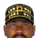
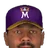
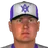
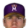

Franchise record book · MLB
Dallas Griffins
Seasons covered: 1961–2002. Only games played for this franchise count.
Read this first: seasons 1871–2001 are real MLB history that shipped with the OOTP file, mapped by OOTP onto this universe's 30 original franchises (club names as they were that season). 2002 is this universe, season to date (top tiers: MLB, ABL, FBL). Player names are as the export stores them; OOTP gives some historical players generated names.
Home runs
| # | Player | Season | Team | Home runs |
|---|---|---|---|---|
| #1 | 2001 |  Texas Rangers Texas Rangers | 52 | |
| #2 | 1969 | Washington Senators | 48 | |
| #3 | 1996 | Texas Rangers | 47 | |
| #4 | 1999 | Texas Rangers | 47 | |
| #5 | 2001 | Texas Rangers | 47 | |
| #6 | 1993 | Texas Rangers | 46 | |
| #7 | 1998 | Texas Rangers | 45 | |
| #8 | 1968 | Washington Senators | 44 | |
| #9 | 1970 | Washington Senators | 44 | |
| #10 | 1992 | Texas Rangers | 43 |
Hits
| # | Player | Season | Team | Hits |
|---|---|---|---|---|
| #1 | 1980 | Texas Rangers | 210 | |
| #2 | 1980 | Texas Rangers | 209 | |
| #3 | 1991 | Texas Rangers | 203 | |
| #4 | 1991 | Texas Rangers | 203 | |
| #5 | 1991 | Texas Rangers | 201 | |
| #6 | 2001 | Texas Rangers | 201 | |
| #7 | 1979 | Texas Rangers | 200 | |
| #8 | 1999 | Texas Rangers | 199 | |
| #9 | 1989 | Texas Rangers | 194 | |
| #10 | 1998 | Texas Rangers | 193 |
RBI
| # | Player | Season | Team | RBI |
|---|---|---|---|---|
| #1 | 1998 | Texas Rangers | 157 | |
| #2 | 1999 | Texas Rangers | 148 | |
| #3 | 1996 | Texas Rangers | 144 | |
| #4 | 2001 | Texas Rangers | 135 | |
| #5 | 1997 | Texas Rangers | 131 | |
| #6 | 1999 | Texas Rangers | 128 | |
| #7 | 1970 | Washington Senators | 126 | |
| #8 | 2001 | Texas Rangers | 123 | |
| #9 | 2000 | Texas Rangers | 120 | |
| #10 | 1989 | Texas Rangers | 119 |
Runs
| # | Player | Season | Team | Runs |
|---|---|---|---|---|
| #1 | 2001 | Texas Rangers | 133 | |
| #2 | 1993 | Texas Rangers | 124 | |
| #3 | 1996 | Texas Rangers | 116 | |
| #4 | 1999 | Texas Rangers | 116 | |
| #5 | 1991 | Texas Rangers | 115 | |
| #6 | 1999 | Texas Rangers | 114 | |
| #7 | 1997 | Texas Rangers | 112 | |
| #8 | 1969 | Washington Senators | 111 | |
| #9 | 1998 | Texas Rangers | 110 | |
| #10 | 1991 | Texas Rangers | 110 |
Stolen bases
Doubles
| # | Player | Season | Team | Doubles |
|---|---|---|---|---|
| #1 | 1998 | Texas Rangers | 50 | |
| #2 | 1991 | Texas Rangers | 49 | |
| #3 | 1996 | Texas Rangers | 47 | |
| #4 | 1991 | Texas Rangers | 44 | |
| #5 | 1980 | Texas Rangers | 43 | |
| #6 | 1984 | Texas Rangers | 42 | |
| #7 | 1979 | Texas Rangers | 42 | |
| #8 | 1997 | Texas Rangers | 42 | |
| #9 | 1996 | Texas Rangers | 41 | |
| #10 | 1999 | Texas Rangers | 41 |
Triples
Walks
Total bases
| # | Player | Season | Team | Total bases |
|---|---|---|---|---|
| #1 | 2001 | Texas Rangers | 393 | |
| #2 | 1998 | Texas Rangers | 382 | |
| #3 | 1999 | Texas Rangers | 356 | |
| #4 | 1996 | Texas Rangers | 348 | |
| #5 | 1989 | Texas Rangers | 344 | |
| #6 | 1969 | Washington Senators | 340 | |
| #7 | 1993 | Texas Rangers | 339 | |
| #8 | 1999 | Texas Rangers | 338 | |
| #9 | 2001 | Texas Rangers | 338 | |
| #10 | 1991 | Texas Rangers | 336 |
Batting average qualified
| # | Player | Season | Team | Batting average |
|---|---|---|---|---|
| #1 | 1991 | Texas Rangers | .341 | |
| #2 | 1980 | Texas Rangers | .333 | |
| #3 | 1996 | Texas Rangers | .332 | |
| #4 | 1999 | Texas Rangers | .332 | |
| #5 | 2001 | Texas Rangers | .330 | |
| #6 | 1994 | Texas Rangers | .329 | |
| #7 | 1980 | Texas Rangers | .329 | |
| #8 | 1999 | Texas Rangers | .326 | |
| #9 | 1999 | Texas Rangers | .324 | |
| #10 | 1978 | Texas Rangers | .324 |
On-base % qualified
| # | Player | Season | Team | On-base % |
|---|---|---|---|---|
| #1 | 1985 | Texas Rangers | .432 | |
| #2 | 1994 | Texas Rangers | .431 | |
| #3 | 1977 | Texas Rangers | .420 | |
| #4 | 1999 | Texas Rangers | .420 | |
| #5 | 1970 | Washington Senators | .416 | |
| #6 | 1991 | Texas Rangers | .408 | |
| #7 | 1997 | Texas Rangers | .405 | |
| #8 | 1999 | Texas Rangers | .405 | |
| #9 | 1975 | Texas Rangers | .403 | |
| #10 | 1969 | Washington Senators | .402 |
Slugging % qualified
| # | Player | Season | Team | Slugging % |
|---|---|---|---|---|
| #1 | 1996 | Texas Rangers | .643 | |
| #2 | 1993 | Texas Rangers | .632 | |
| #3 | 1998 | Texas Rangers | .630 | |
| #4 | 1999 | Texas Rangers | .630 | |
| #5 | 2001 | Texas Rangers | .622 | |
| #6 | 1999 | Texas Rangers | .601 | |
| #7 | 1997 | Texas Rangers | .589 | |
| #8 | 1969 | Washington Senators | .574 | |
| #9 | 2001 | Texas Rangers | .563 | |
| #10 | 1999 | Texas Rangers | .558 |
OPS qualified
| # | Player | Season | Team | OPS |
|---|---|---|---|---|
| #1 | 1999 | Texas Rangers | 1.050 | |
| #2 | 2001 | Texas Rangers | 1.021 | |
| #3 | 1996 | Texas Rangers | 1.011 | |
| #4 | 1993 | Texas Rangers | 1.000 | |
| #5 | 1998 | Texas Rangers | .997 | |
| #6 | 1999 | Texas Rangers | .980 | |
| #7 | 1969 | Washington Senators | .976 | |
| #8 | 1970 | Washington Senators | .962 | |
| #9 | 2000 | Texas Rangers | .954 | |
| #10 | 2001 | Texas Rangers | .944 |
WAR (OOTP)
| # | Player | Season | Team | WAR (OOTP) |
|---|---|---|---|---|
| #1 | 2001 | Texas Rangers | 8.9 | |
| #2 | 1969 | Washington Senators | 8.1 | |
| #3 | 1968 | Washington Senators | 8.1 | |
| #4 | 1970 | Washington Senators | 6.9 | |
| #5 | 1991 | Texas Rangers | 6.6 | |
| #6 | 1975 | Texas Rangers | 6.5 | |
| #7 | 1989 | Texas Rangers | 6.4 | |
| #8 | 1991 | Texas Rangers | 6.4 | |
| #9 | 1999 | Texas Rangers | 6.4 | |
| #10 | 1993 | Texas Rangers | 6.3 |
Wins
| # | Player | Season | Team | Wins |
|---|---|---|---|---|
| #1 | 1974 | Texas Rangers | 25 | |
| #2 | 1992 | Texas Rangers | 21 | |
| #3 | 1998 | Texas Rangers | 20 | |
| #4 |  Williams Bibby | 1974 | Texas Rangers | 19 |
| #5 | 1998 | Texas Rangers | 19 | |
| #6 | 1987 | Texas Rangers | 18 | |
| #7 | 1999 | Texas Rangers | 18 | |
| #8 | 1978 | Texas Rangers | 18 | |
| #9 | 1977 | Texas Rangers | 17 | |
| #10 | 1979 | Texas Rangers | 17 |
Strikeouts
| # | Player | Season | Team | Strikeouts |
|---|---|---|---|---|
| #1 | 1989 | Texas Rangers | 301 | |
| #2 | 1990 | Texas Rangers | 232 | |
| #3 | 1974 | Texas Rangers | 225 | |
| #4 | 1987 | Texas Rangers | 223 | |
| #5 | 1990 | Texas Rangers | 221 | |
| #6 | 1991 | Texas Rangers | 203 | |
| #7 | 1966 | Washington Senators | 195 | |
| #8 | 1986 | Texas Rangers | 189 | |
| #9 | 1999 | Texas Rangers | 186 | |
| #10 | 1969 | Washington Senators | 182 |
Saves
Innings
| # | Player | Season | Team | Innings |
|---|---|---|---|---|
| #1 | 1974 | Texas Rangers | 328.1 | |
| #2 | 1987 | Texas Rangers | 285.1 | |
| #3 | 1978 | Texas Rangers | 270.0 | |
| #4 | 1975 | Texas Rangers | 270.0 | |
| #5 | 1984 | Texas Rangers | 266.0 | |
| #6 | 1992 | Texas Rangers | 265.2 | |
| #7 | Williams Bibby | 1974 | Texas Rangers | 264.0 |
| #8 | 1979 | Texas Rangers | 259.0 | |
| #9 | 1964 | Washington Senators | 257.0 | |
| #10 | 1983 | Texas Rangers | 252.0 |
Complete games
Shutouts
ERA qualified
| # | Player | Season | Team | ERA |
|---|---|---|---|---|
| #1 | 1972 | Texas Rangers | 2.17 | |
| #2 | 1969 | Washington Senators | 2.19 | |
| #3 | 1978 | Texas Rangers | 2.27 | |
| #4 | 1961 | Washington Senators | 2.40 | |
| #5 | 1983 | Texas Rangers | 2.42 | |
| #6 | 2002 (MLB) | Dallas Griffins | 2.45 | |
| #7 | 1965 | Washington Senators | 2.60 | |
| #8 | 1968 | Washington Senators | 2.69 | |
| #9 | 1977 | Texas Rangers | 2.72 | |
| #10 | 1976 | Texas Rangers | 2.76 |
WHIP qualified
| # | Player | Season | Team | WHIP |
|---|---|---|---|---|
| #1 | 1991 | Texas Rangers | 1.01 | |
| #2 | 1974 | Texas Rangers | 1.01 | |
| #3 | 1969 | Washington Senators | 1.01 | |
| #4 | 1961 | Washington Senators | 1.03 | |
| #5 | 1990 | Texas Rangers | 1.03 | |
| #6 | 1975 | Texas Rangers | 1.05 | |
| #7 | 1977 | Texas Rangers | 1.07 | |
| #8 | 1966 | Washington Senators | 1.07 | |
| #9 | 1981 | Texas Rangers | 1.07 | |
| #10 | 1966 | Washington Senators | 1.08 |
K/9 qualified
| # | Player | Season | Team | K/9 |
|---|---|---|---|---|
| #1 | 1989 | Texas Rangers | 11.3 | |
| #2 | 1991 | Texas Rangers | 10.6 | |
| #3 | 1990 | Texas Rangers | 10.2 | |
| #4 | 1990 | Texas Rangers | 9.0 | |
| #5 | 1986 | Texas Rangers | 8.4 | |
| #6 | 1999 | Texas Rangers | 8.2 | |
| #7 | 2002 (MLB) | Dallas Griffins | 7.8 | |
| #8 | Williams Bibby | 1973 | Texas Rangers | 7.7 |
| #9 | 1989 | Texas Rangers | 7.7 | |
| #10 | 1988 | Texas Rangers | 7.6 |
WAR (OOTP)
| # | Player | Season | Team | WAR (OOTP) |
|---|---|---|---|---|
| #1 | 1974 | Texas Rangers | 8.4 | |
| #2 | 1978 | Texas Rangers | 7.8 | |
| #3 | 1989 | Texas Rangers | 7.5 | |
| #4 | 1992 | Texas Rangers | 6.8 | |
| #5 | 1978 | Texas Rangers | 6.1 | |
| #6 | 1975 | Texas Rangers | 6.1 | |
| #7 | 1977 | Texas Rangers | 6.0 | |
| #8 | 1980 | Texas Rangers | 5.9 | |
| #9 | 1976 | Texas Rangers | 5.8 | |
| #10 |  Ken Hill | 1996 | Texas Rangers | 5.7 |
Home runs
| # | Player | Years | Home runs |
|---|---|---|---|
| #1 | 1989–02 | 340 | |
| #2 | 1958–73 | 246 | |
| #3 | 1986–02 | 240 | |
| #4 | 1991–02 | 196 | |
| #5 | 1986–02 | 177 | |
| #6 |  Dean Palmer • | 1989–02 | 154 |
| #7 | 1974–88 | 149 | |
| #8 | 1986–98 | 124 | |
| #9 | 1969–86 | 124 | |
| #10 | 1994–02 | 118 |
Hits
| # | Player | Years | Hits |
|---|---|---|---|
| #1 | 1991–02 | 1595 | |
| #2 | 1989–02 | 1421 | |
| #3 | 1986–02 | 1397 | |
| #4 | 1986–02 | 1246 | |
| #5 | 1974–89 | 1180 | |
| #6 | 1969–86 | 1174 | |
| #7 | 1958–73 | 1141 | |
| #8 | 1994–02 | 1107 | |
| #9 | 1972–89 | 1060 | |
| #10 | 1982–93 | 914 |
RBI
| # | Player | Years | RBI |
|---|---|---|---|
| #1 | 1989–02 | 1075 | |
| #2 | 1986–02 | 822 | |
| #3 | 1991–02 | 769 | |
| #4 | 1986–02 | 730 | |
| #5 | 1958–73 | 701 | |
| #6 | 1994–02 | 597 | |
| #7 | 1969–86 | 568 | |
| #8 | 1974–88 | 522 | |
| #9 | 1972–89 | 499 | |
| #10 | 1982–93 | 487 |
Runs
| # | Player | Years | Runs |
|---|---|---|---|
| #1 | 1989–02 | 791 | |
| #2 | 1991–02 | 785 | |
| #3 | 1986–02 | 767 | |
| #4 | 1986–02 | 631 | |
| #5 | 1969–86 | 631 | |
| #6 | 1994–02 | 619 | |
| #7 | 1958–73 | 544 | |
| #8 | 1974–89 | 482 | |
| #9 | 1972–89 | 471 | |
| #10 | Dean Palmer • | 1989–02 | 425 |
Stolen bases
| # | Player | Years | Stolen bases |
|---|---|---|---|
| #1 | 1977–82 | 161 | |
| #2 | 1969–86 | 153 | |
| #3 | 1968–77 | 144 | |
| #4 | 1985–94 | 129 | |
| #5 | 1982–02 | 98 | |
| #6 | 1991–02 | 93 | |
| #7 | 1961–71 | 92 | |
| #8 | 1978–86 | 92 | |
| #9 | 1983–93 | 91 | |
| #10 | 1986–02 | 89 |
Doubles
| # | Player | Years | Doubles |
|---|---|---|---|
| #1 | 1991–02 | 312 | |
| #2 | 1989–02 | 282 | |
| #3 | 1986–02 | 266 | |
| #4 | 1994–02 | 249 | |
| #5 | 1986–02 | 248 | |
| #6 | 1974–89 | 200 | |
| #7 | 1972–89 | 197 | |
| #8 | 1969–86 | 187 | |
| #9 | 1982–93 | 161 | |
| #10 | 1958–73 | 155 |
Triples
| # | Player | Years | Triples |
|---|---|---|---|
| #1 | 1986–02 | 44 | |
| #2 | 1961–71 | 30 | |
| #3 | 1961–75 | 27 | |
| #4 | 1974–89 | 27 | |
| #5 | 1991–02 | 26 | |
| #6 | 1966–71 | 24 | |
| #7 | 1986–02 | 23 | |
| #8 | 1994–02 | 23 | |
| #9 | Takahashi Unser | 1968–82 | 22 |
| #10 | 1969–86 | 22 |
Walks
| # | Player | Years | Walks |
|---|---|---|---|
| #1 | 1969–86 | 708 | |
| #2 | 1986–02 | 617 | |
| #3 | 1958–73 | 575 | |
| #4 | 1974–89 | 544 | |
| #5 | 1994–02 | 500 | |
| #6 | 1974–85 | 435 | |
| #7 | 1982–93 | 404 | |
| #8 | 1986–02 | 358 | |
| #9 | 1989–02 | 344 | |
| #10 | 1970–85 | 335 |
Total bases
| # | Player | Years | Total bases |
|---|---|---|---|
| #1 | 1989–02 | 2761 | |
| #2 | 1991–02 | 2547 | |
| #3 | 1986–02 | 2429 | |
| #4 | 1986–02 | 2113 | |
| #5 | 1958–73 | 2074 | |
| #6 | 1969–86 | 1777 | |
| #7 | 1994–02 | 1756 | |
| #8 | 1974–89 | 1614 | |
| #9 | 1972–89 | 1560 | |
| #10 | 1974–88 | 1464 |
Batting average min 2,000 PA
| # | Player | Years | Batting average |
|---|---|---|---|
| #1 | 1968–85 | .319 | |
| #2 | 1986–00 | .308 | |
| #3 | 1982–02 | .307 | |
| #4 | 1994–02 | .305 | |
| #5 | 1991–02 | .304 | |
| #6 | 1970–84 | .303 | |
| #7 | 1986–02 | .296 | |
| #8 | 1989–02 | .294 | |
| #9 | 1974–85 | .293 | |
| #10 | 1972–89 | .293 |
On-base % min 2,000 PA
| # | Player | Years | On-base % |
|---|---|---|---|
| #1 | 1974–85 | .399 | |
| #2 | 1986–00 | .395 | |
| #3 | 1994–02 | .388 | |
| #4 | 1982–02 | .382 | |
| #5 | 1986–02 | .378 | |
| #6 | 1958–73 | .367 | |
| #7 | 1966–74 | .365 | |
| #8 | 1986–02 | .363 | |
| #9 | 1968–85 | .358 | |
| #10 | 1969–86 | .357 |
Slugging % min 2,000 PA
| # | Player | Years | Slugging % |
|---|---|---|---|
| #1 | 1989–02 | .572 | |
| #2 | 1986–02 | .514 | |
| #3 | 1958–73 | .503 | |
| #4 | 1991–02 | .485 | |
| #5 | 1986–00 | .485 | |
| #6 | 1994–02 | .484 | |
| #7 | 1986–02 | .475 | |
| #8 | Dean Palmer • | 1989–02 | .470 |
| #9 | 1968–85 | .466 | |
| #10 | 1986–98 | .459 |
OPS min 2,000 PA
| # | Player | Years | OPS |
|---|---|---|---|
| #1 | 1989–02 | .915 | |
| #2 | 1986–02 | .893 | |
| #3 | 1986–00 | .880 | |
| #4 | 1994–02 | .872 | |
| #5 | 1958–73 | .870 | |
| #6 | 1991–02 | .826 | |
| #7 | 1968–85 | .824 | |
| #8 | 1982–02 | .822 | |
| #9 | 1974–85 | .809 | |
| #10 | 1986–02 | .798 |
WAR (OOTP)
| # | Player | Years | WAR (OOTP) |
|---|---|---|---|
| #1 | 1958–73 | 44.1 | |
| #2 | 1986–02 | 38.2 | |
| #3 | 1989–02 | 37.0 | |
| #4 | 1969–86 | 33.2 | |
| #5 | 1991–02 | 32.0 | |
| #6 | 1994–02 | 26.1 | |
| #7 | 1986–02 | 24.7 | |
| #8 | 1982–02 | 20.0 | |
| #9 | 1972–89 | 20.0 | |
| #10 | 1974–85 | 19.1 |
Wins
| # | Player | Years | Wins |
|---|---|---|---|
| #1 | 1970–94 | 139 | |
| #2 | 1986–01 | 104 | |
| #3 | 1965–83 | 93 | |
| #4 | Kenny Rogers • | 1989–02 | 88 |
| #5 | 1986–02 | 78 | |
| #6 | 1994–02 | 68 | |
| #7 | 1985–94 | 66 | |
| #8 | 1966–76 | 59 | |
| #9 | 1978–98 | 55 | |
| #10 | 1993–02 | 54 |
Strikeouts
| # | Player | Years | Strikeouts |
|---|---|---|---|
| #1 | 1970–94 | 1452 | |
| #2 | 1986–01 | 1405 | |
| #3 | 1966–93 | 939 | |
| #4 | 1965–83 | 895 | |
| #5 | Kenny Rogers • | 1989–02 | 881 |
| #6 | 1986–02 | 742 | |
| #7 | 1985–94 | 715 | |
| #8 | 1994–02 | 687 | |
| #9 | 1962–83 | 575 | |
| #10 | 1966–76 | 573 |
Saves
| # | Player | Years | Saves |
|---|---|---|---|
| #1 | 1989–00 | 150 | |
| #2 | 1983–96 | 134 | |
| #3 | 1952–70 | 83 | |
| #4 | 1965–80 | 64 | |
| #5 | 1982–95 | 58 | |
| #6 | 1974–86 | 37 | |
| #7 | 1973–78 | 35 | |
| #8 |  Jeff Zimmerman • | 1999–02 | 32 |
| #9 | 1986–97 | 32 | |
| #10 | 1981–95 | 31 |
Innings
| # | Player | Years | Innings |
|---|---|---|---|
| #1 | 1970–94 | 2308.0 | |
| #2 | 1986–01 | 1680.2 | |
| #3 | 1965–83 | 1410.1 | |
| #4 | Kenny Rogers • | 1989–02 | 1291.1 |
| #5 | 1986–02 | 1278.2 | |
| #6 | 1966–76 | 1103.1 | |
| #7 | 1985–94 | 1013.2 | |
| #8 | 1994–02 | 1008.0 | |
| #9 | 1971–83 | 915.0 | |
| #10 | 1978–98 | 872.0 |
Complete games
| # | Player | Years | Complete games |
|---|---|---|---|
| #1 | 1970–94 | 98 | |
| #2 | 1965–83 | 90 | |
| #3 | 1962–83 | 55 | |
| #4 | 1986–02 | 40 | |
| #5 | 1965–79 | 36 | |
| #6 | 1986–01 | 33 | |
| #7 | 1971–83 | 32 | |
| #8 | 1970–92 | 29 | |
| #9 | 1957–75 | 28 | |
| #10 | Williams Bibby | 1972–84 | 26 |
Shutouts
| # | Player | Years | Shutouts |
|---|---|---|---|
| #1 | 1965–83 | 17 | |
| #2 | 1962–83 | 12 | |
| #3 | 1970–94 | 11 | |
| #4 | 1970–92 | 11 | |
| #5 | 1966–76 | 9 | |
| #6 | Williams Bibby | 1972–84 | 8 |
| #7 | 1965–79 | 7 | |
| #8 | 1957–66 | 7 | |
| #9 | 1972–82 | 7 | |
| #10 | 1986–02 | 6 |
ERA min 500 IP
| # | Player | Years | ERA |
|---|---|---|---|
| #1 | 1962–83 | 3.26 | |
| #2 | 1966–76 | 3.35 | |
| #3 | 1971–83 | 3.41 | |
| #4 | 1966–93 | 3.43 | |
| #5 | 1957–75 | 3.46 | |
| #6 | 1965–79 | 3.51 | |
| #7 | 1965–83 | 3.56 | |
| #8 | 1966–73 | 3.67 | |
| #9 | 1970–94 | 3.68 | |
| #10 | 1978–98 | 3.72 |
WHIP min 500 IP
| # | Player | Years | WHIP |
|---|---|---|---|
| #1 | 1966–93 | 1.13 | |
| #2 | 1965–83 | 1.17 | |
| #3 | 1962–83 | 1.18 | |
| #4 | 1966–76 | 1.25 | |
| #5 | 1957–75 | 1.27 | |
| #6 | 1960–69 | 1.27 | |
| #7 | 1965–79 | 1.28 | |
| #8 | 1970–94 | 1.28 | |
| #9 | 1973–93 | 1.29 | |
| #10 | 1971–83 | 1.29 |
K/9 min 500 IP
| # | Player | Years | K/9 |
|---|---|---|---|
| #1 | 1966–93 | 10.1 | |
| #2 | 1986–01 | 7.5 | |
| #3 | 1992–98 | 6.4 | |
| #4 | 1985–94 | 6.3 | |
| #5 | 1962–83 | 6.3 | |
| #6 | 1987–02 | 6.2 | |
| #7 | Kenny Rogers • | 1989–02 | 6.1 |
| #8 | 1994–02 | 6.1 | |
| #9 | 1965–79 | 5.9 | |
| #10 | 1978–98 | 5.8 |
WAR (OOTP)
| # | Player | Years | WAR (OOTP) |
|---|---|---|---|
| #1 | 1965–83 | 24.7 | |
| #2 | 1970–94 | 24.6 | |
| #3 | 1986–02 | 23.2 | |
| #4 | 1966–93 | 22.7 | |
| #5 | 1962–83 | 21.3 | |
| #6 | 1986–01 | 20.1 | |
| #7 | 1971–83 | 19.1 | |
| #8 | 1966–76 | 17.1 | |
| #9 | Kenny Rogers • | 1989–02 | 16.9 |
| #10 | 1978–98 | 15.3 |
The franchise's best real-history seasons by winning percentage.
| Season | Club | W | L | PCT | Postseason |
|---|---|---|---|---|---|
| 1999 | Texas Rangers | 95 | 67 | .586 | Playoffs |
| 1977 | Texas Rangers | 94 | 68 | .580 | |
| 1996 | Texas Rangers | 90 | 72 | .556 | Playoffs |
| 1998 | Texas Rangers | 88 | 74 | .543 | Playoffs |
| 1981 | Texas Rangers | 57 | 48 | .543 | |
| 1978 | Texas Rangers | 87 | 75 | .537 | |
| 1986 | Texas Rangers | 87 | 75 | .537 | |
| 1969 | Washington Senators | 86 | 76 | .531 | |
| 1993 | Texas Rangers | 86 | 76 | .531 | |
| 1991 | Texas Rangers | 85 | 77 | .525 |